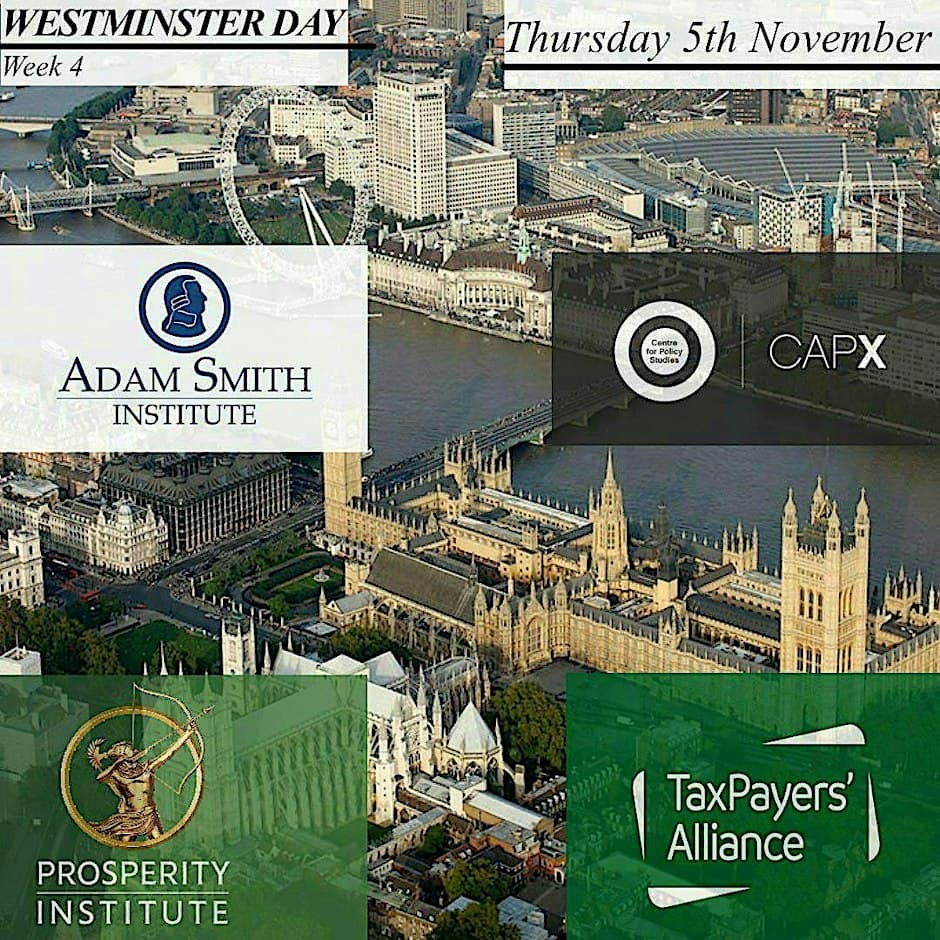

Speaker event · Week 4
JIM ALLISTER KC MP
The Future of Unionism
Jim Allister will discuss the past, present, and future of Unionism. Audience Q&A will follow the discussion.
Sign UpSign up for our upcoming events below. Tickets are handled through Eventbrite, and places are limited, so book early. See the term card for the full programme.
The Future of Unionism
Jim Allister will discuss the past, present, and future of Unionism. Audience Q&A will follow the discussion.
Sign Up
Four think tanks in one day
A day in Westminster visiting four of the most influential think tanks: the Adam Smith Institute, the Centre for Policy Studies & CapX, the Prosperity Institute and the TaxPayers' Alliance. Four offices, four sessions and networking events.
Sign UpIs DEI Undermining Higher Education?
Nathan Cofnas will discuss DEI and its impact on higher education and academic freedom.
Sign Up